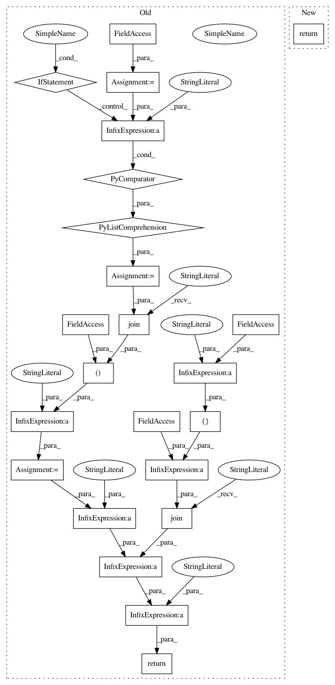

08e57f495ebbfa254783777bae75590af8165f53,reframe/core/containers.py,Sarus,launch_command,#Sarus#,136
Before Change
def launch_command(self):
super().launch_command()
run_opts = ["--mount=type=bind,source="%s",destination="%s"" %
mp for mp in self.mount_points]
if self.with_mpi:
run_opts.append("--mpi")
run_opts += self.options
run_cmd = self._command + " run %s %s bash -c " % (" ".join(run_opts),
self.image)
return run_cmd + """ + " ".join(
["cd " + self.workdir] + self.commands) + """
class Shifter(Sarus):
"""Container platform backend for running containers with `Shifter
After Change
run_opts += self.options
workdir_opt = f"--workdir="{self.workdir}" " if self.workdir else ""
return (f"sarus run {workdir_opt}{" ".join(run_opts)} {self.image} "
f"{self.command or ""}").rstrip()
class Shifter(ContainerPlatform):
"""Container platform backend for running containers with `Shifter
In pattern: SUPERPATTERN
Frequency: 3
Non-data size: 23
Instances
Project Name: eth-cscs/reframe
Commit Name: 08e57f495ebbfa254783777bae75590af8165f53
Time: 2021-02-15
Author: manitaras@cscs.ch
File Name: reframe/core/containers.py
Class Name: Sarus
Method Name: launch_command
Project Name: eth-cscs/reframe
Commit Name: 08e57f495ebbfa254783777bae75590af8165f53
Time: 2021-02-15
Author: manitaras@cscs.ch
File Name: reframe/core/containers.py
Class Name: Singularity
Method Name: launch_command
Project Name: eth-cscs/reframe
Commit Name: 08e57f495ebbfa254783777bae75590af8165f53
Time: 2021-02-15
Author: manitaras@cscs.ch
File Name: reframe/core/containers.py
Class Name: Docker
Method Name: launch_command